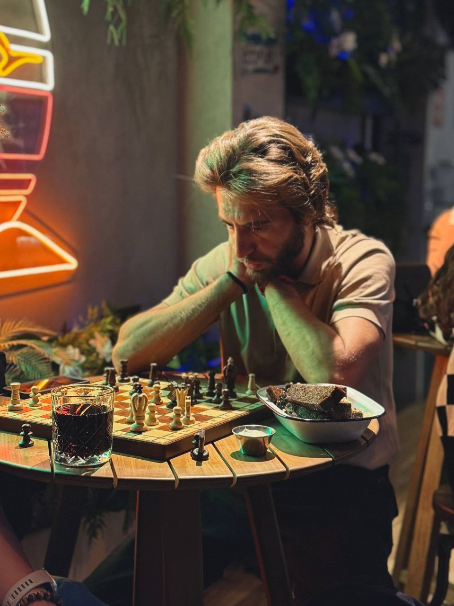

Привет, я Николай
Бегаю, играю в шахматы и люблю готовить. Моя цель — организовать детский лагерь летом 2027 года: движение, логика и умение накормить себя и близких.
Бегаю, играю в шахматы и люблю готовить. Моя цель — организовать детский лагерь летом 2027 года: движение, логика и умение накормить себя и близких.
Мои тренировки и достижения
Регулярные тренировки и участие в забегах. Бег для меня - это медитация в движении и способ поддерживать физическую форму.
Стратегии, партии и анализ
Анализ сыгранных партий, изучение дебютов и тактических приемов. Шахматы учат мыслить стратегически и принимать взвешенные решения.

Просто, вкусно, по-домашнему — для детей и мужиков.
Готовка — навык, который пригодится в любой семье. Начнём с любимых простых блюд и постепенно перейдём к тем, что требуют чуть больше времени.
Лето 2027 · Идея будущего детского лагеря: бег и физкультура, шахматы, кулинария. Учимся двигаться, думать и заботиться о себе и близких.